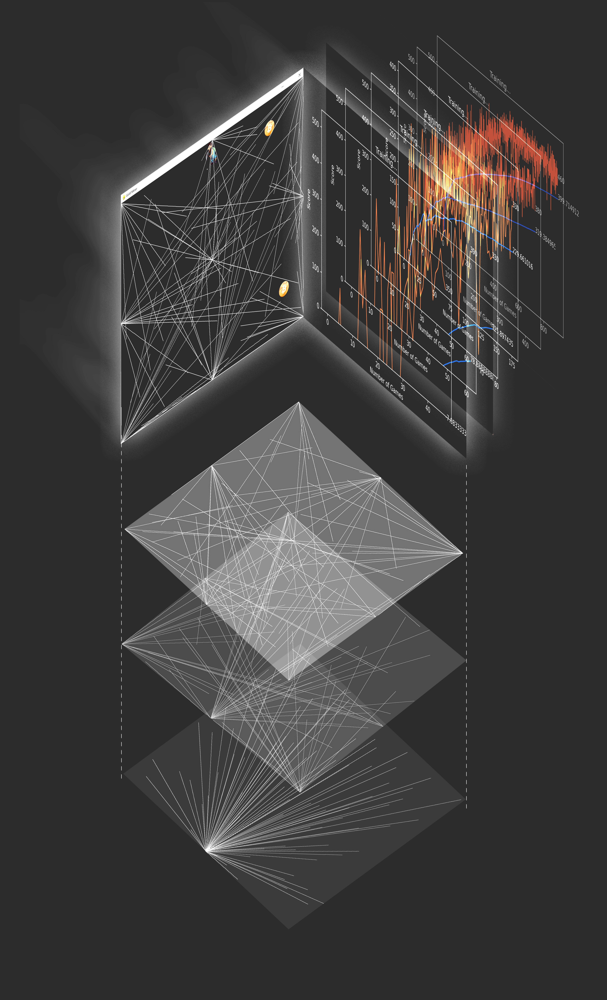

Academic Project Feb 2024 to May 2024 Instructor: Allen Sayegh, Katarina Richter-Lunn
1. Abstract
The project revolutionizes the way art is created by introducing a game-like reward system. This system enables an AI agent to learn through reinforcement learning and generate art. Within this framework, humans establish aesthetic criteria as game rules, empowering the AI to optimize its actions to earn the maximum rewards, thereby producing extraordinary artwork. This project exemplifies a pioneering form of human-AI collaboration in the realm of art facilitated by contemporary advancements in AI technology. A particularly fascinating aspect of this algorithm-driven art is its existence in a nebulous intermediary space where the creator sets abstract aesthetic guidelines without directly crafting the artwork, and the audience can envision the potential artwork through these rules but must wait until the AI completes its training to see the final product. Under this framework, anyone can create artwork regardless of whether or not they have received art training. The project is also named Odyssey, symbolizing AI's journey into uncharted aesthetic territories.
2. Concept
The concept of this project derives from a screenshot of the video game Snake, which I found similar to the MIT Press logo designed by Muriel Cooper. The aesthetics of a snake game screenshot are a result of its rules, which disallow the snake to hit itself or the border of the map, forcing the snake to find an optimal path to occupy the whole space without intersecting itself. This is a similar concept to space-filling curves, which are widely used in computational art or graphic design.
I got inspiration from this finding that we might be able to create artwork through playing games. In other words, by setting game rules or a reward-penalty mechanism, we can make art that corresponds to our aesthetic preferences.
3. Video Game as a State Machine
Video games can indeed be viewed as state machines, which is a concept widely used in game development. A state machine, in the context of computer science and programming, is a model of computation consisting of a set of states, transitions between those states, and actions that depend on a state and cause transitions to other states. Both state and action are clearly defined in a video game. Thus, audience or players and easily imagine what the scenes look like.
4. Reward Mechanism as Quantitative Aesthetics
4.1 Aesthetics: Radial Pattern
Reward mechanism:
After 580 epochs of training, the AI agent learns the optimal policy, which is to stay at a single point and catch all the bitcoins. This forms a radial pattern, like a beam of light. As such, a simple reward function corresponds to a specific pattern which people usually describe with their languages like "radial", "light beam".
4.2 Aesthetics: Decentralization
In this case, the reward function is defined in such a way that the longer the average of casting lines, the lower the reward the agent will get. The expression of the reward function is: f(avg_length) = -log(avg_length/600). f(avg_length) is a monotone decreasing function. The AI agent gets a positive reward if the average length is smaller than 600, and a negative reward if the average length is larger than 600. As is shown in the plot below:
After 700 epochs of training, the AI agent learned to capture the bitcoin from the spots closest to it. As a result, it learns to draw short radial lines from different points. The whole drawing looks like fireworks, with a emphasis on decentralization.
4.3 Aesthetics: Diagonal
In this case, the reward function is defined in such a way that the closer the coefficient of the line is to 0.6, the higher the reward the agent will get.
After 890 epochs of training, the AI agent learns to fill the canvas with diagonal lines, creating a moment like grass blown by wind.
4.4 Aesthetics: Even Distribution

I found Sol LeWitt's drawing is cleaner than mine. The lines in his work are more evenly distributed, while mine seems like a mess. I was trying to find out a way to determine such a difference. By marking the intersections of lines, I found the main identifier.

There is a thing called Moran's I, which is a measure of spatial autocorrelation.

A Moran's I close to 1 indicates that the points in the space are clustered, while a Moran's I close to -1 indicates that the points are dispersed. A Moran's I close to 0 means the points are randomly distributed. So, to get an image closer to Sol LeWitt's work, we probably need to create lines in the space whose intersection points has a negative Moran's I. How can we do this? Luckily, reinforcement learning can help.
Aesthetics: Color
If we see RGB value as a (3,1) vector, we can define a reward function regarding the color difference between a pixel and its surroundings.
5. AI Agent as Apprentice
Do you know that Sol LeWitt's wall painting was not done by himself but by his apprentice? Sol LeWitt's job is just to set some rules of drawing, based on which his apprentice will finish the drawing. In this process, the apprentice applied their aesthetic preferences to the drawings. That's the reason why the their drawing, as is shown above, looks better mine generated with random function. In this project, I am trying to follow the same path: